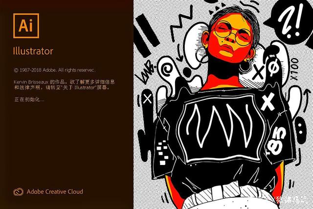
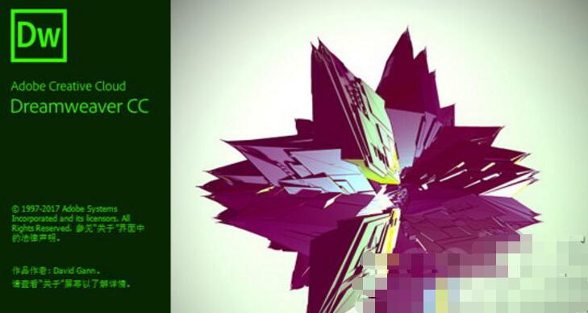
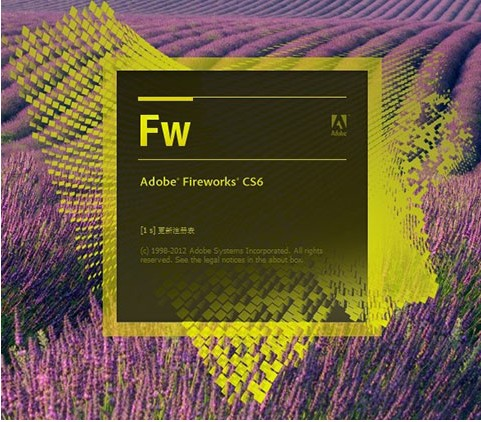

页面设计软件列表（点击查看）
- Adobe Photoshop，简称“PS”，是由Adobe Systems开发和发行的图像处理软件。
- Photoshop主要处理以像素所构成的数字图像。使用其众多的编修与绘图工具，可以有效地进行图片编辑工作。
- ps有很多功能，在图像、图形、文字、视频、出版等各方面都有涉及。
- Adobe支持Windows操作系统 、Android与Mac OS， 但Linux操作系统用户可以通过使用Wine来运行Photoshop。
- 
- Adobe illustrator，常被称为“AI”，
- 是一种应用于出版、多媒体和在线图像的工业标准矢量插画的软件。
- 作为一款非常好的矢量图形处理工具，该软件主要应用于印刷出版、海报书籍排版、专业插画、多媒体图像处理和互联网页面的制作等，
- 也可以为线稿提供较高的精度和控制，适合生产任何小型设计到大型的复杂项目。
- 
- DW是集网页制作和管理网站于一身的所见即所得网页代码编辑器。
- 利用对 HTML、CSS、JavaScript等内容的支持，设计师和程序员可以在几乎任何地方快速制作和进行网站建设。
- Adobe Dreamweaver使用所见即所得的接口，亦有HTML（标准通用标记语言下的一个应用）编辑的功能，借助经过简化的智能编码引擎，轻松地创建、编码和管理动态网站。
- 访问代码提示，即可快速了解 HTML、CSS 和其他Web 标准。使用视觉辅助功能减少错误并提高网站开发速度。
- 
- 是一款创建与优化 Web 图像和快速构建网站与 Web 界面原型的理想工具,可直接置入Dreamweaver中轻松地进行开发与部署。
- Fireworks 不仅具备编辑矢量图形与位图图像的灵活性， 还提供了一个预先构建资源的公用库，
- 可与 Adobe Photoshop、Adobe Illustrator、Adobe Dreamweaver和 Adobe Animate 软件省时集成。
- 在 Fireworks中将设计迅速转变为模型， 或利用来自Illustrator、Photoshop和Flash的其它资源。